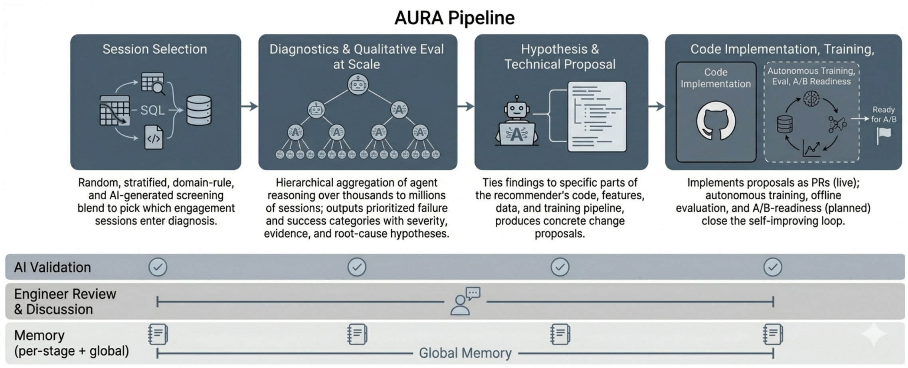
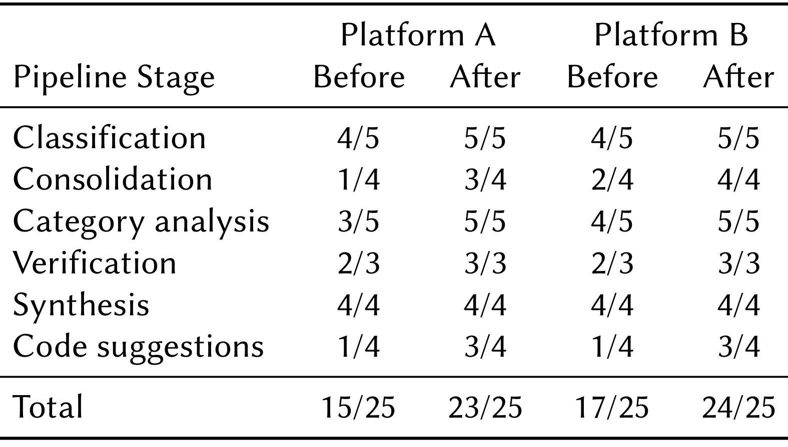
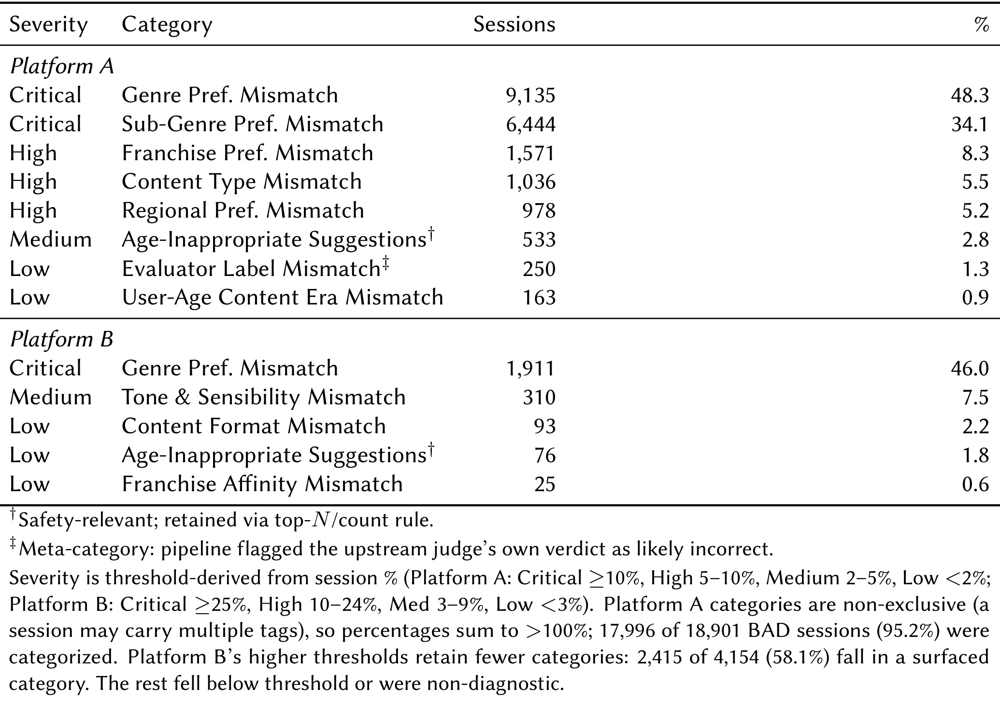
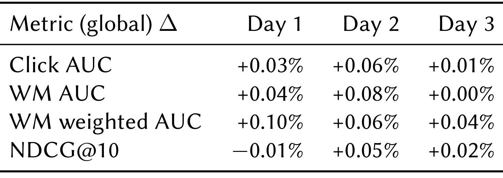
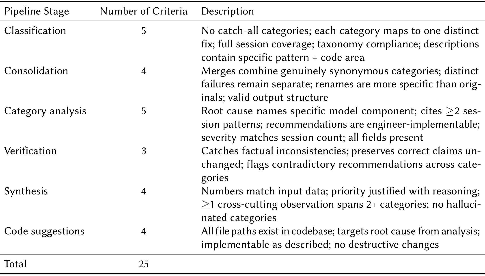
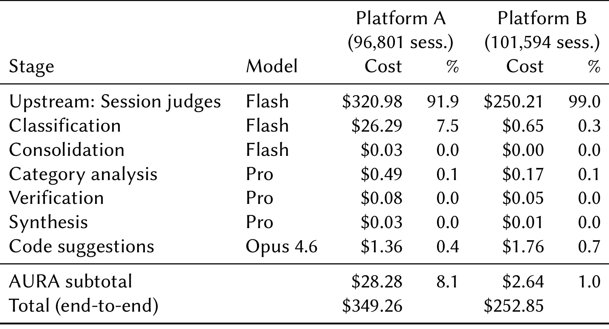

AURA：把推荐故障诊断连接到可审核的代码改动
- 论文：AURA: Agentic Diagnosis and Refinement for Production Recommender Systems at Scale
- 作者：SungGeun Kim、Abhinav Narain、Daniel Nemirovsky
- 机构：The Walt Disney Company；第一作者完成研究时在迪士尼，现任职 Intuit。
- 首次公开：2026-09-15；笔记日期：2026-09-17。
- 论文入口：arXiv:2609.16625
- 代码：未核验到本论文独立公开实现。论文首页标注 RecSys 同期 GenAIECommerce 2026 workshop 信息，以下结论依据公开稿。
1. 背景和问题
聚合指标只能给出推荐质量的高层且不完整图景；理解推荐在哪些情境下使用户受益或受损，需要在大规模场景中结合领域理解进行细粒度推理。
1.1 平均值之后仍然缺失的故障解释
AURA 针对的是推荐工程中相当具体的断点：团队已经知道模型整体变好了或变差了，却不知道哪些用户正经历怎样的错误。点击率、排序相关性、覆盖率和多样性提供的是各自统计口径下的汇总。一套系统可以在总体排序分数上改善，同时给儿童画像展示不适龄内容，让某个地区的用户反复看到不相关节目，或者让同一个系列在多个首页栏目里重复出现。大流量人群的提升能够掩盖小群体的退化，且离线标签和真实体验本就不是同一个对象。论文将这种平均指标与具体体验之间的信息缺口作为出发点，研究如何把原本依靠专家人工抽查的工作扩大到生产日志规模。
例如，工程师看到 NDCG 下降，可以继续切地域、设备、内容类型和用户历史。但组合越来越多，问题的语义也越来越细：一个悬疑爱好者不喜欢某种内容调性，和一个儿童用户被展示恐怖宣传片，可能都表现为不点击，却对应完全不同的风险和修复路径。增加一个总指标并不能自动告诉工程师该读哪段特征代码、哪个候选过滤器或哪份训练标签。实际团队因此需要临时查询、逐会话阅读与业务访谈。人工解释具有价值，但很难覆盖不断变化的内容目录、用户状态和多个平台，也很难在每次模型迭代之后系统重做。
论文并未主张替代随机对照实验。在线实验回答改动是否导致目标指标变化，诊断回答观察到了哪些不满意现象、在哪些会话中发生，以及哪些机制值得检查。两者在证据链中的位置不同。一个原因听上去合理的补丁，仍可能无法提升目标人群的排序；一个全局指标持平的模型，也可能修复少量但重要的安全问题。把这些对象拆开后，AURA 的作用才清楚：它把具体会话中的失败模式转换为带证据的候选工程任务，再让人和实验判断任务是否值得落实。
1.2 从会话裁判到推荐工程提案
已有大模型裁判通常给单条推荐或单次会话打分，并给出理由。这样的结果规模扩大后，会产生海量自然语言解释。若工程师仍要逐条阅读，工作并没有真正完成。AURA 在裁判结果和代码修改之间插入可归并的故障分类：先把相近现象聚合成稳定类别，再保留代表会话、覆盖人数、优先级和原因假设。如此可以从“很多人看到不合适内容”走到“某类人群的内容类型偏好与候选不匹配”，进而定位可能涉及的画像、特征交互和排序模块。
另一条相邻路线是用智能体自动修改模型、训练并搜索更高的总体分数。AURA 的入口有所不同：先解释真实用户侧的失败，再回到推荐代码提出针对性改动。它不凭空模拟所有用户，而是消费实际生产会话及上下文；不只给出一句自由文本建议，而是要求提案连接到真实存在的文件、特征和训练流程。这种定位使它特别适合成为现有推荐研发流程的辅助层。是否使用大模型生成补丁，可以比是否自动上线更早落地；论文实际部署也只推进到供工程师审核的拉取请求。
研究对象是同一家媒体企业的两个流媒体平台。平台 A 偏家庭内容，平台 B 面向一般受众，二者有不同目录、数据字段、用户群和排序模型。作者将平台差异放进配置层，使同一核心流程读取各平台的字段映射、查询片段、类别字典、提示词和阈值。这证明了企业内部两个真实场景的迁移可行性，却不能据此断言它已经在电商、广告或所有推荐业务上验证。文中列出的电商对应关系，是把内容偏好映射为商品类别或价格偏好、把系列偏好映射为品牌偏好，属于设计上的外推。
1.3 阅读时需要分开的三个成功标准
第一个标准是诊断材料是否可核验：引用的会话真实存在吗，类别是否明确，覆盖数字是否一致，建议是否指向代码。第二个标准是对问题的解释是否真实：用户真的受到了该类失败影响吗，裁判有没有把偏好差异误判为系统错误，代码中的机制是否确实造成了现象。第三个标准是修复是否有效：代码改动能否改变目标人群的体验，并在必要的线上实验中获得收益。论文对第一层给出了较丰富的工程证据，对第二层主要依靠模型裁判与案例，对第三层报告了重要的负结果，不能把三层合并成一个“系统准确率”。
这种分层也有助于理解本文最值得重视的结果。作者提出的两个题材偏好修复都没有改善目标会话人群，离线全局指标只在噪声附近变化。诊断能够组织出可以实验的假设，并不意味着假设已经被证实。拒绝无效改动本身可以节约在线实验资源，但这属于研发过程的收益，不能转换成已测量的转化率收益。对希望使用智能体做推荐优化的团队而言，文章最可迁移的贡献是把证据、代码引用、筛选和否决组织起来，而不是给出一种必然有效的新排序结构。
还要留意“生产部署”的具体含义。这里有真实生产日志、进入工程工作流的诊断和提案，以及沙箱中的代码修改。自动触发训练、自动离线评估、打包线上实验结果的两个扩展仍在开发，候选训练和实验由人把关。跨轮记忆记录历史类别、尝试过的假设与结果，但论文没有提供长期连续自我优化的收益曲线。因此，下文把已实现模块、离线验证和未来计划分别讨论，避免从系统名称中的“改进”直接推导出效果保证。
2. 方法
2.1 会话选择与分层诊断
流程先决定读哪些会话，再决定如何把大量会话压缩成工程师可以处理的发现。会话选择允许随机抽样、分层抽样、领域规则和智能体筛选共同工作。一个数据画像步骤先建立分布基线；工程师维护的 SQL 覆盖低排序质量、高观看时长、重复内容、子题材和内容调性偏差、儿童安全等问题；多个筛选智能体还能独立提出候选人群。重叠人群经过合并，再根据多个智能体的提议进行共识排序。每个进入诊断的会话带上已有裁判结论、理由、编辑属性、用户历史、内容时间和曝光动作，避免后续模型只根据孤立标题推断体验。

图中四个阶段依次连接会话选择、大规模诊断、假设与技术提案、代码实施。上半部分的箭头表示证据逐步转成行动，而下半部分三条贯穿的带状结构表示验证、工程师参与和记忆都不是最后才添加的装饰。诊断阶段画成树形，是因为一次提示无法容纳生产规模全部会话：叶节点处理可放入上下文的分片，中间层归并相近发现，顶层形成较小的优先任务列表。这样扩展了处理范围，但也使遗漏和错误可能在归并过程中传播，所以分类词汇、原始会话引用和后续复核必须一起保留。
最右侧区域尤其需要仔细读。实线部分是目前能够生成代码拉取请求的能力，虚线框中的自动训练、离线评估和线上实验准备属于计划扩展。虚线并不表示已经自动完成了所有闭环步骤。工程师可以在中间阶段检查证据、否决分类或修改假设，不能只在补丁产生后面对一个难以回溯的答案。底部共享记忆则记录之前发现过什么、哪些改动失败过，意图减少反复诊断相同现象。论文描述了这一架构用途，尚未给出长期记忆带来多少额外收益的单独消融。
从输入输出看，这张图并不是新的线上排序网络。输入是离线生产日志、裁判结果及平台上下文，输出是结构化故障发现、技术方案和待审核代码。在线用户请求仍由已有推荐系统响应，因此智能体推理耗时不应与排序接口延迟直接比较。不同平台通过配置提供数据语义和阈值；核心编排器确定各阶段顺序及模型分工。这样的边界也意味着，诊断任务可以采用更昂贵的大模型，但仍需要完整核算日志裁判和聚合分析的成本，而不能只展示树顶的少量推理费用。
实际部署把树形思想实现为六步漏斗。分类对会话分批处理，赋予类别及短描述；合并统一同义标签，避免“跨栏目重复”和“重复推荐”分裂计数；抽样依据前若干大类、绝对数量或比例阈值选择值得深读的类别，再从每类抽取有界随机样本；分析让一个工作单元集中解释一个类别，输出描述、严重性、原因假设、证据和建议；验证检查跨类别一致性及数字校准；综合生成最终优先列表。安全问题可以绕过频率门槛，因此低占比不代表自动丢弃。
分类阶段压缩的是会话集合，分析阶段解释的是已保留类别，两个阶段不能共享一个没有分母说明的“准确率”。 高吞吐分类与合并交给轻量模型，低数量但上下文要求高的分析、验证与总结交给强模型。本文没有可复用的核心公式，也没有新的训练损失；其可复现对象是字段、抽样规则、类别字典、调用边界和检查器，本文按这些真实规则解释，不人为创造优化目标。类别比例的分母是平台 BAD 会话数，而不是整个平台所有曝光，这一口径贯穿排序和成本解释。
2.2 从原因假设到工程师审核的代码
被验证的发现随后与代码上下文连接。智能体读取模型代码、特征定义、训练流水线、标签说明、数据统计和模式信息，判断哪些模块可能导致观察到的现象。例如，冷启动分支对全局热度赋予过高权重，可以是“热门内容挤占个性偏好”的候选解释；但必须指出具体实现与支持会话，不能只写一个行业常见原因。输出提案包含把发现连接到某个组件的假设，以及一个或多个针对性修改。作者明确使用“根因假设”，并没有声称这一步完成正式因果推断。
代码阶段采用生成、评估、修订循环。生成器获得发现、假设、相关表模式和代码索引；索引先提供文件路径及行数，避免把整个仓库一股脑塞入上下文。独立评估器检查正确性、可实施性和副作用，未通过则把反馈交回生成器。通过模型评审后还要用程序检查文件是否存在、导入是否可解析、引用是否虚构。最后把候选建议写入建议库，在共享界面交给工程师，并在沙箱仓库形成可审查改动。
这一设计区分了语言上的合理性与工程上的存在性。一个建议即使解释通顺，也可能引用根本不存在的文件；文件存在也不代表其修改能修复问题。程序检查能排除前一种错误，目标人群评测和实验才有机会检验后一种。当前自动化终点是拉取请求，训练和线上实验仍有人工检查点。未来计划是合入沙箱后触发训练，随后自动离线评估并形成可供实验的平台产物。读者不能把计划中的反馈回路当作本次实验已经拥有的自动收益搜索能力。
2.3 贯穿各阶段的验证、审核与记忆
每个大模型输出边界都需要防御性验证。会话标识必须属于输入集合，结构化输出必须通过模式检查，解析失败进入质量标记；代码路径和导入在真实仓库中核对。论文提到正则回退以处理不规范载荷，但解析成功只意味着可以继续检查，不构成语义正确证明。诊断层还有验证智能体，负责跨发现的事实一致性与严重性校准。人工界面把原始会话、结构化发现和提案放在一起，工程师可以讨论、评论、投票、推进到待办或直接否决。否决是正常产物，不是需要被隐藏的失败。
权限与平台隔离也是方法的一部分。数据读取发生在只读分析数据湖，代码改动限制在克隆的沙箱，每个正式上线的改动由具名工程师承担责任。必须传递的平台参数贯穿组件，减少平台 A 的列名、类别或用户信息被误用于平台 B。提示词作为带版本的工件存储，允许回滚；模型版本变化可能改变格式和判定分布，升级前应回看历史基线。这样的管理与选择更强的基础模型是互补关系，因为再强的模型也无法读取一个根本没有被传入的类别占比。
记忆层保存各阶段类别、试过的假设、建议过的代码及结果，跨轮汇总已知经验。这里值得保留“结果”而不只保留“建议”：一个被离线实验否决的改动，如果只有漂亮解释而没有负反馈，就很容易在下一轮被再次提出。与此同时，类别库必须与提示词中的允许词汇保持一致。封闭词典能够减少漂移，也可能在数据库缺失时压缩掉真实多样性。论文记录过分类库被清空后所有会话塌缩为两类的事故，说明记忆与配置并非只增益的信息源，也需要一致性检查和可回退机制。
3. 实验结果
3.1 数据与裁判校准的适用范围
平台 A 总共评估 96,801 次会话，其中 18,901 次被上游裁判标为 BAD，约占 19.5%；平台 B 总共 101,594 次，BAD 为 4,154 次，约占 4.1%。这些是评估窗口内被判为负面的会话全集，不是对 BAD 子集再随意抽出的示例。但它们不是人工标注的真实故障全集，也不能把两个 BAD 比例当作平台质量排名。两平台裁判按自身业务分别校准，平台 B 的提示词还在过程中修订，分母相似并不意味着判定尺度一致。
作者另外抽取约二百次分层会话，让三个模型检查上游判定是否正确。平台 A 的多数认可比例是 192/200，即 96.0%；平台 B 是 176/201，即 87.6%，三个模型完全一致的比例分别为 80% 和 58%。这提供了交叉模型校准线索，却没有独立人工真值。高认可率会抬升原始一致率，论文报告的机会校正一致性较低；部分模型家族同时参与上游和下游，也可能偏好自身风格。因而这些数字应该写作“多数模型认可原判定”，不能写成“故障识别准确率达到百分之九十六”。
3.2 阶段评分改善了什么

表中每个分数都是该阶段通过的检查条目数。平台 A 从总计十五项通过变成二十三项，平台 B 从十七项变成二十四项，总分母均为二十五。分类从五项通过四项变成全过，类别分析和验证也达到所列标准；综合阶段起初就全部通过，不能把它算成后续改进的来源。代码建议两个平台最终都是四项中三项通过，仍留下未解决要求。这个表没有会话级预测标签，也不是在相同用户样本上统计的推荐命中率，所以不能把总分换算成模型精度，更不能把前后分差当作业务指标提升。
作者把改动区分为架构修复和提示词修订。六项架构变化涉及显示名称规范、阈值、自适应样本数量、回复截断限制、分类上下文传递和专用验证提示，其中三项解决了单纯改提示词无法解决的问题。很具体的例子是分析器没有收到类别会话占比，却被要求校准严重性；模型只好猜测规模，补传真实数字后两个平台同时改善。这表明一部分所谓模型“推理错误”实际上来自输入接口缺失。论文称只有分类和类别分析需要提示词层面调整，其他阶段通过结构修复或原本就满足要求。
但是这种前后迭代不是严格的全因子消融。所有改动在同一检查表上评估，且由模型裁判读取真实输出做判断，没有展示每项变化在独立留出人群上的置信区间，也没有与同成本人工分析流程作随机对照。我们可以据此学习哪些接口缺陷真实出现过，不能精确计算某个模块贡献了多少诊断收益。更不能因为改进后接近满分，就认定所有失败原因已经可靠。检查表覆盖的是交付质量的重要侧面，仍需接上外部人审和修复效果。
封闭分类词典带来的变化相当有操作性。平台 B 最初产生三十多个重叠类别，增加格式和合并规则后仍有二十二个；明确列出十三类并要求不新增类别后，分类仍偶尔产生词典之外标签，实际发出十六个标签，但后处理只需要一次重命名，无需大规模合并。平台 A 也独立采用十三类词典，一轮产生十二个标签，合并为八类。这里的收益是分类稳定与清理工作减少，不是证明十三是最优类别数；若新故障类型出现，过度封闭反而需要探索阶段或人工扩词。
3.3 失败分布与被阈值隐藏的风险

平台 A 的题材偏好不匹配涉及九千多次 BAD 会话，占百分之四十八点三，子题材不匹配约百分之三十四点一；平台 B 最大类也是题材偏好不匹配，为一千九百一十一次，占百分之四十六。两个平台共同的大类并不意味着完全相同的原因：家庭内容的系列偏好、一般受众的调性敏感度可以不同。表中类别占比以各自 BAD 集合为分母，平台 A 允许一个会话属于多个类别，因此各项比例相加超过百分之百是正常的多标签现象，不应据此指责计算错误，也不能相加估算独立受影响人数。
“严重性”在这张表里实际是按覆盖比例划分的档位。平台 A 达到十分之一就进入最高档，平台 B 最高档门槛为四分之一，阈值不同又一次阻止了跨平台直接比较。频率档位不能代表单次事件伤害，年龄不适宜内容即使只占很少会话，也可能比频繁但轻微的题材偏差更紧急。因此系统保留安全相关类别的阈值例外，不能把表里的低等级读成无需处理。平台 B 若只按百分之五筛选，会丢掉格式不匹配、年龄问题和系列偏好三个较小类别；绝对数量和前若干类的并行规则让这些问题继续进入分析。
表底还报告了一个容易遗漏的覆盖边界：平台 A 的已归类会话占 BAD 的百分之九十五点二，平台 B 只有百分之五十八点一。平台 B 剩余部分可能低于阈值或没有形成可诊断模式，不能被当作没有问题。两者覆盖差异也会影响每条发现的成本与最终任务数量。平台 A 还有二百五十条“裁判标签不匹配”，即下游分析读完整证据后怀疑上游判错；这提示诊断层不必机械继承裁判，但论文仍缺少独立人审来确认这些反驳到底正确多少。因此更严谨的写法是发现了需要复核的元问题，而不是已经证明裁判的二百五十个错误全部被纠正。
3.4 两项合理修复都没有带来目标收益

表中的对照是生产模型的克隆，三个列对应独立训练的三天；行包括点击曲线下面积、观看相关曲线下面积、加权版本和前十位排序质量。所有百分比变化都位于正负零点一附近，最明显的正值也只是加权指标的一次零点一。这里应保留原文的百分比变化口径，不能改写成百分点。作者将这些变化解释为运行间噪声范围，表没有提供足够的区间估计让读者进一步断言统计显著。更关键的是，全局持平只说明没有观察到明显整体变化，不能替代目标人群是否修复的检验。
针对平台 B 的题材偏好问题，提案阶段给出了两个看上去合理的修改：显式加入用户题材与候选题材交叉特征，以及由候选条件化地汇聚用户题材观看历史的注意力机制。两者都在一千九百一十一次目标会话上测试，均没有改善排序。表三具体展示候选感知改动的全局结果，正文还说明两个方案都在聚合指标噪声附近。这组结果应作为负结果保留，而不是从少数正号中选择一个包装成提升。论文没有给出这类修复成功在线上线、提高点击或留存的证据。
负结果并不否定故障类别一定存在，却削弱了从类别到具体代码原因的那条推断。也许题材信息已经被现有特征充分表达，也许主要约束在召回或展示而非排序，也可能上游裁判把合理曝光判成偏好不匹配；这些都是读者可以进一步检验的解释，原文并未确认哪一种。系统的实际价值是在昂贵线上实验之前排除没有支持的补丁，而不是让诊断文本自动获得因果权威。后续记忆也应保存目标会话、补丁版本和无改善结果，避免另一轮智能体重新提出同样想法。只有把失败实验完整记录下来，所谓跨轮迭代才有可积累的内容。
3.5 检查标准与端到端成本

这一表给表一的分数补足了语义。分类需要避免兜底类别、让类别对应明确改动、覆盖会话并遵守词典；合并要求只合并真正同义的模式；分析要求指向具体组件，引用至少两种会话模式，给出工程师可以实施的建议并匹配严重性数字。验证要发现事实冲突而保留正确说法，综合要保持数字一致并提出跨类别观察，代码建议要引用真实文件且避免破坏性修改。可以看到，它衡量的是一条工程建议能否被理解、追溯和尝试，比要求“回答详细”具体得多，也更容易发现接口缺陷。
不过，检查条目中的“针对根因”仍然依赖对原因假设的理解，并不等于干预后证实了因果关系。引用了两个会话模式，能防止只凭一个孤例过度推断，却不能自动排除抽样偏差；文件存在，能排除虚构路径，却不能确保补丁在训练时被真正执行。六个被评分阶段还与方法中的六步诊断漏斗略有不同：抽样步骤没有独立计分，代码建议被加入评分。若忽视这种集合差异，就会把漏斗的完整覆盖误当成每个步骤都已有量化评估。
评分由两个独立模型读取阶段输出，再通过裁判间一致性确定结论。这样的流程适合做快速回归检查，能帮助团队发现格式、引用和数字退化，但仍缺少留出的人类专家判断。若同一检查表持续驱动提示词调优，系统可能越来越擅长满足条目，而未知失败被排除在评分视野之外。可借鉴的做法是保留这些明确条目作为必要条件，同时另建人审和实验终点。论文也把独立人工审核与外部基线比较列入未来工作，这限制了“接近满分”的外推强度。

平台 A 的上游逐会话裁判估算费用为三百二十点九八美元，平台 B 为二百五十点二一美元，占总费用约九成二与九成九；AURA 自身小计分别为二十八点二八和二点六四美元，全链路总计三百四十九点二六与二百五十二点八五美元。低价模型承担高吞吐分类和合并，强模型只处理少量归并后的类别，这是增量较低的直接机制。不能只报二点六四美元而说十万会话诊断全流程只需这个金额，因为能被消费的裁判结果本身已经花费了上游预算。
两个平台增量差距也不是相同负载下的模型效率比较。平台 A 有更多 BAD 会话、更长分类上下文，分类调用七百五十七次，每次约五万五千输入词元；平台 B 为四十一次、每次约九千。分类词元量因此约为四千一百八十万对三十六点九万，提示缓存只部分缓解。不同人群覆盖、阈值和上下文长度共同决定成本，不能把价差归因于平台架构天然更优。表中上游费用是观察单会话价格后按总人口外推，代码生成费用则根据上下文与补丁规模估计，不是每个环节都有直接账单遥测。
运行时间同样要保持边界。完整流程在两个平台分别耗时一千五百五十四和九百六十五分钟，其中 AURA 聚合阶段为三百零四和七十二分钟。若已有上游评估平台，新增诊断层的边际成本可能不高；若从零搭建，仍要承担裁判时间和预算。论文按发现数估计聚合诊断每条最多五点三八美元，纳入上游后每条约四十三至五十美元，但“发现”是保留类别，不是已证实修复。随着阈值改变，类别数会变化，所以每条成本不能独立于覆盖率与审核通过率进行优化。更完整的运营指标应进一步记录工程师耗时、无效提案比例和实验净收益，本文尚未给出这些终点。
3.6 部署事故比成功案例更有辨识力
一个基线运行曾在会话标识字段中生成九百零四个虚构标识，还混入真实集合名称使其看起来可信。后续使用输入成员检查过滤，说明仅凭格式正确和叙述流畅完全不足以保证证据真实。严重性过高则被追溯到未传入会话占比，补字段比反复要求模型客观更有效。封闭分类库清空引起的两类塌缩，说明稳定词典需要依赖检查。平台参数在开发阶段阻止跨平台混用，则揭示多租户配置并不是简单替换标题。
这几种问题覆盖了标识、数值、语义分类和权限上下文四种不同边界，不能用一个通用的“再审核一次”替代。它们共同支持结构化检查的必要性，却没有自动证明检查器覆盖了所有未知错误。跨平台迁移的证据来自两个流媒体系统；电商的加购、购买、退货和库存陈旧能够对应现有会话字段，但这些新信号会改变判断尺度。文章没有在电商平台报告实际运行结果，迁移前仍需重新定义坏会话、保留规则和安全类别。
4. 总结
AURA 的贡献是把推荐日志中的细粒度体验问题组织为可以回到代码检查的工程任务。真实会话、稳定分类、代表证据、原因假设、代码引用和人工否决构成连续链条。最有说服力的部分是已公开的部署事故和负实验：缺失字段会让模型编造严重性，虚构标识能穿过漂亮文本，合理的题材交叉特征与注意力修改仍可能没有收益。这些事实让系统的价值更加具体，也让“自动改进推荐”的宣传边界必须保持克制。
主要局限需要分别看待。 第一，故障真值主要由模型裁判提供，交叉模型认可不能代替独立人类审查，且模型家族重叠可能引入共同偏差。第二，阶段评分在固定检查表上迭代，缺少外部基线和严格单模块对照，无法量化每种结构变化独立贡献。第三，原因是假设，两个针对性改动没有改善目标人群，没有证据表明本次部署已经产生线上业务收益。第四，两个平台属于同一企业和相近领域，电商迁移尚停留在概念映射。第五，类别频率与个体伤害不同，封闭词典和阈值可能漏掉新颖、稀少但重要的问题。第六，自动训练和实验准备仍是未来扩展，不能把当前拉取请求终点解释为完整自主闭环。
对工程落地，值得优先复用的是小而硬的接口。会话标识应从输入集合选择而非自由生成；类别占比应由代码计算并显式提供；代码引用应经仓库验证；审核界面应允许回到原始证据，而不是只看到模型总结。此处是依据文中事故提炼的实施判断，不是作者报告的新实验结果。权限上只读数据湖、隔离代码沙箱和具名改动负责人，能让提案阶段的探索成本低于直接接入生产写入。与此同时，应把裁判版本、阈值、类别词典和样本范围共同存档，否则跨轮数字变化很难分清是系统改善还是评估口径变化。
后续最值得跟进的第一项，是留出人审：按类别、占比和安全等级抽样，检查真实错误比例以及未被归类的会话，特别关注平台 B 尚未覆盖的部分。第二项是完整记录提案漏斗，从诊断发现、工程师接受、代码实施到目标人群改善，分别报告转化率和耗时；这样才能判断智能体节约了多少研发工作。第三项是验证类别发现的开放阶段与执行阶段的封闭词典如何切换，确保新故障能进入系统，而不是只对已知类别越来越熟练。第四项是观察自动训练与评估扩展上线后的严格实验，尤其需要比较全局指标持平时局部体验是否确实改善。
在研究层面，一个清晰的下一步是把“解释可实施”和“解释正确”拆成两个数据集。前者可以依靠文件、模式和运行检查评估，后者需要更可信的人工判断或干预证据。即使一个提案被成功编译执行，也可能没有改变目标机制；即使目标指标变好，也可能来自与原假设不同的路径。保留失败结果和替代解释，才能避免系统记忆只积累一连串自我肯定的故事。本文给出的离线否决案例正适合成为这种记忆的起点。
因此，目前可以支持的结论是：AURA 在两套真实流媒体数据和工程环境中展示了可追溯的诊断与提案流程，且增量聚合成本相对已有裁判开销较小。尚不能支持的结论是它已实现可靠的因果根因定位、跨领域通用诊断，或自主在线收益提升。把这些边界保留在结果旁边，反而更有利于决定应该从哪一环开始试用，以及用什么证据判断下一步是否值得推进。